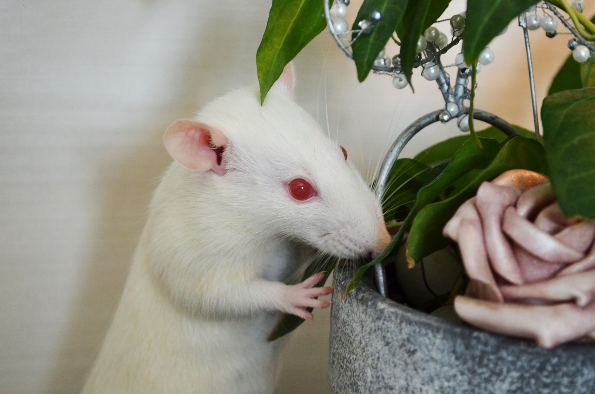

Hetterotter er lett å kjenne igjen på grunn av mønsteret på pelsen. De er hvite med en hette rundt hodet i en annen farge, ofte svart eller brun. Det er derfor det heter hetterotter. Halen er nesten like lang som rotta. Føttene ligner veldig på menneskehender og de bruker framlabbene til å holde ting med. Framlabbene har fire fingre, mens bakføttene har fem fingre. Det eneste unntaket på mønsteret er hvis rotta er albino. Da er den helt hvit med røde øyne, og den har veldig dårlig syn.
Vekt
En voksen hunnrotte veier ca. 400g.
En voksen hannrotte veier ca. 700g.

Dette er en albino rotte.
Tilbake til startsiden